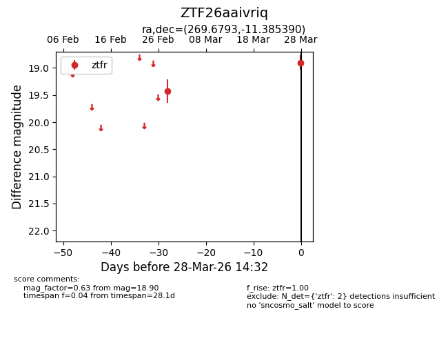
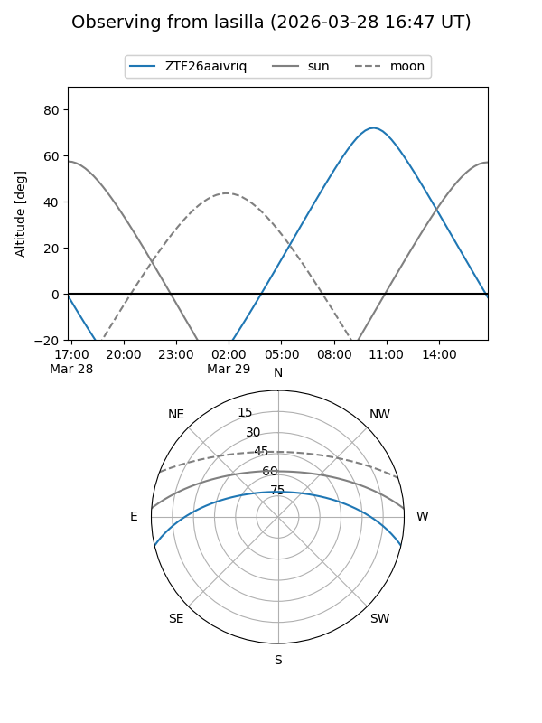
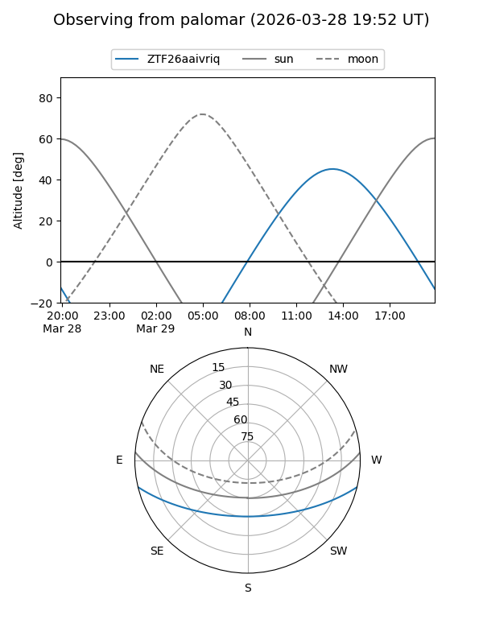

ZTF26aaivriq
Target ZTF26aaivriq at 2026-03-28 14:35
Aliases and brokers:
FINK: link
Lasair: link
ALeRCE: link
alt names
ZTF26aaivriq (ztf,fink_ztf)
Coordinates:
equatorial (ra, dec) = 269.6793,-11.38539
equatorial (HMS+DMS) = 17:58:43.04,-11:23:07.41
galactic (l, b) = (16.7149,+6.25314)
Flags:
Photometry:
last ztfr=18.90
2 ztfr detections
Lightcurve

Visibility


Additional plots